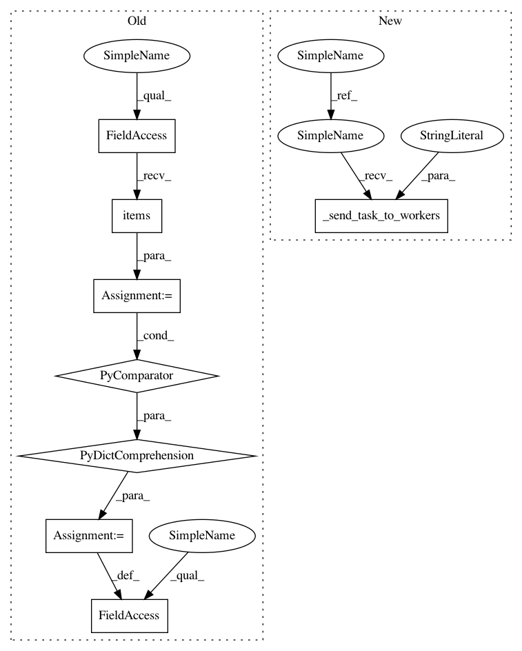

959fcc4f5dd2972a1894041a3aff1505f61fcf93,tmtoolkit/preprocess.py,TMPreproc,use_ngrams_as_tokens,#TMPreproc#Any#Any#,173
Before Change
self._require_ngrams()
if join:
new_tok = {dl: tuplize([join_str.join(g_tuple) for g_tuple in dg])
for dl, dg in self._ngrams.items()}
else:
new_tok = {dl: tuplize(dg) for dl, dg in self._ngrams.items()}
self._tokens = new_tok
self.pos_tagged = False
self.ngrams_as_tokens = True
return self
After Change
return self
def use_ngrams_as_tokens(self, join=False, join_str=" "):
//self._require_ngrams()
self._invalidate_workers_tokens()
self._send_task_to_workers("use_ngrams_as_tokens", join=join, join_str=join_str)
self.pos_tagged = False
self.ngrams_as_tokens = True
In pattern: SUPERPATTERN
Frequency: 3
Non-data size: 8
Instances
Project Name: WZBSocialScienceCenter/tmtoolkit
Commit Name: 959fcc4f5dd2972a1894041a3aff1505f61fcf93
Time: 2017-08-22
Author: markus.konrad@wzb.eu
File Name: tmtoolkit/preprocess.py
Class Name: TMPreproc
Method Name: use_ngrams_as_tokens
Project Name: WZBSocialScienceCenter/tmtoolkit
Commit Name: 959fcc4f5dd2972a1894041a3aff1505f61fcf93
Time: 2017-08-22
Author: markus.konrad@wzb.eu
File Name: tmtoolkit/preprocess.py
Class Name: TMPreproc
Method Name: tokenize
Project Name: WZBSocialScienceCenter/tmtoolkit
Commit Name: 959fcc4f5dd2972a1894041a3aff1505f61fcf93
Time: 2017-08-22
Author: markus.konrad@wzb.eu
File Name: tmtoolkit/preprocess.py
Class Name: TMPreproc
Method Name: use_ngrams_as_tokens
Project Name: WZBSocialScienceCenter/tmtoolkit
Commit Name: 959fcc4f5dd2972a1894041a3aff1505f61fcf93
Time: 2017-08-22
Author: markus.konrad@wzb.eu
File Name: tmtoolkit/preprocess.py
Class Name: TMPreproc
Method Name: generate_ngrams